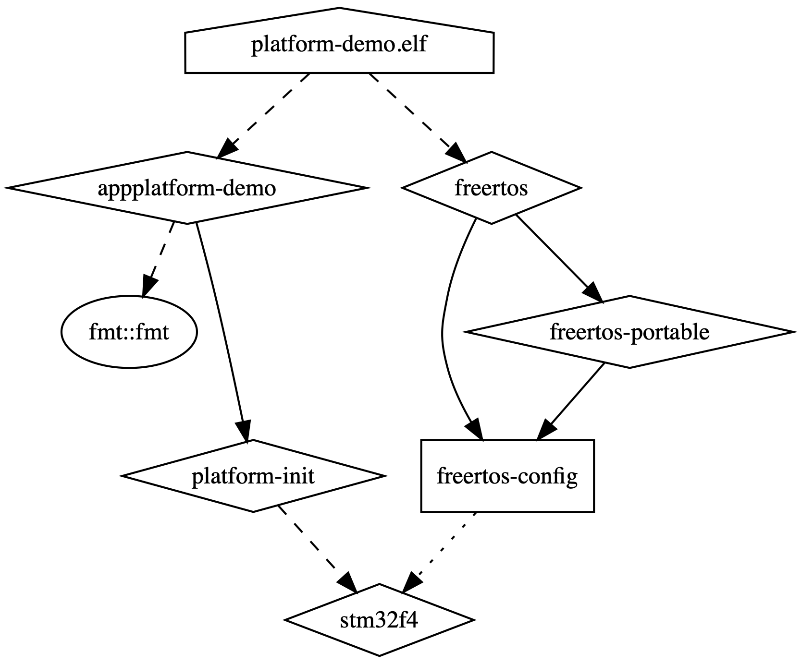

19 reasons why CMake is actually awesome¶
Topic of CMake is extremely controversial in the C/C++ community. People say that it is hard to properly set the include paths, that syntax is archaic or that managing dependencies is a nightmare. Expressing public hate for CMake has become a way of integrating with other software developers on the Internet.
And I partially understand that statements. Before CMake 3.x (aka Modern CMake) we were forced to use
include_directories() or manually set installation paths for libraries, that were not supported by default in CMake.
Syntax was a bit oldish and managing the compilation flags usually lead to headaches.
But since CMake 3.x (released on 06.2014) we have way more flexible and elegant ways of creating build systems with CMake. Almost all cons are gone in favor of the new modern solutions. The only problem is that once a bad impression was made, it is really hard to change it. After all, who would like to invest in studying new features and best practices of a build system?! Well I do, and let me share with you 19 reasons, why CMake is actually awesome and you should give it a try again.
Info
For someone who is completely new to the topic: CMake is a build system generator, that creates build system files for common frameworks and IDE’s from a generic scripting language.
Disclaimer
This article aims to give a brief overview of CMake capabilities without going deep into technical details. Consult the official CMake docs for more details.
1. CMake is cross-platform¶
This one should be obvious since CMake has been cross-platform from the beginning. Currently it can run on all major platforms:
- Windows,
- Linux,
- MacOS.
It means, that we can build projects which use CMake on all above platforms without additional platform-specific configurations. No need to write Makefiles, configure Visual Studio projects, create custom Bash or batch files. Everything is handled by CMake. Note, that I say “build on”, not “build for”. There is a clear separation between build host and build target. Of course case when host and target is the same is assumed by default.
2. CMake supports multiple IDE’s and build frameworks¶
CMake is a build system generator (meta build system), which means that it creates configuration files for other existing build systems. List of available options is dependent on the build host, which is natural (usually there is no need to generate Visual Studio projects on Linux).
Below you can find a complete list (as for publication date) of all supported frameworks (CMake is calling them generators):
- Borland Makefiles,
- MSYS Makefiles,
- MinGW Makefiles,
- NMake Makefiles,
- NMake Makefiles JOM,
- Unix Makefiles,
- Watcom WMake,
- Ninja,
- Visual Studio 6,
- Visual Studio 7,
- Visual Studio 7 .NET 2003,
- Visual Studio 8 2005,
- Visual Studio 9 2008,
- Visual Studio 10 2010,
- Visual Studio 11 2012,
- Visual Studio 12 2013,
- Visual Studio 14 2015,
- Visual Studio 15 2017,
- Visual Studio 16 2019,
- Green Hills MULTI,
- Xcode,
- CodeBlocks,
- CodeLite,
- Eclipse CDT4,
- Kate,
- Sublime Text 2.
Only by using different command line option you can target either MacOS XCode or Windows Visual Studio. Quite impressive, wouldn’t you say?
-
CMake supports native shell commands/apps execution Despite being OS-independent, CMake still gives you ability to execute custom host-specific shell commands or launch given application with the following commands:
-
execute_process(), add_custom_command().
However, this is not a good practice because it makes our build system tightly coupled with the concrete platform (which is in contrary to the purpose of CMake).
4. CMake allows easy external project download and incorporation¶
In some cases we are forced to use some external projects from the remote location (e.g. Internet) or simply from another local repository/disk directory. CMake has two integrated mechanisms for supporting that:
FetchContent(),ExternalProject_Add().
Both commands are almost identical except for one crucial difference: FetchContent is launched during the generation
time (when you call cmake) and ExternalProject_Add is launched during build time (e.g. when you call make).
Its usage is straightforward – you have to specify Git/SVN/file/other location and optional parameters (e.g. repository branch) and CMake will automatically download and optionally build that project for you.
Here you have an example of downloading libfmt project from GitHub using v11.0.2 tag:
After that, you have libfmt downloaded in your build directory and added to the project. Now you can treat that it
like normal source path (in particular link with any targets defined by libfmt repo).
5. CMake supports cross-compilation like a champ¶
Cross-compilation (building for platform other than you use for compilation) has always scared me. A task nearly impossible to do manually in a cross-platform manner.
CMake has this ability built-in and requires very little effort to make it work for you. All you need to do is to
provide the so called toolchain file. It is a normal CMake file, except it doesn’t require its name to be
CMakeLists.txt (actually I would prefer it to be called <toolchain_name>.cmake). Below you can see an example
toolchain file for arm-none-eabi-gcc toolchain (arm-none-eabi-gcc.cmake):
As you can see, this file only sets paths to several tools from the toolchain and sets common compilation flags (specific for that compiler).
In order to tell CMake to use this configuration you have to set the CMAKE_TOOLCHAIN_FILE variable before the call to
project() function. So you can either set it as a command line argument:
or as a normal variable in the root CMakeLists.txt:
6. CMake makes it easy to handle include paths¶
Before CMake 3.x when you wanted to set the include paths for the current directory and everything below you had to write:
This is bad! Don’t do that unless you know what you are doing. This is an anti-pattern of software architecture. In order to get the includes from another library you had to know its internal structure (to include the proper sets of paths). And what if that library is changed? You have to adjust every time. Nightmare!
Wouldn’t it be nice if that library provided you with everything you need with one statement? Since modern CMake (3.x+)
it is possible! Library author can utilize the fact, that when you “link” with that library via target_link_libraries
(quite unfortunate name: read this for a reason why) you “inherit” all its public properties. And the
include paths are the property of the library. They can set via target_include_directories function.
So in other words, the library sets its include paths as its “include” property and when you link with it you automatically get them. No need to write anything manually. Also the internal structure of the library is completely hidden:
Note
PUBLIC, PRIVATE and INTERFACE specifiers are explained in this article.
7. CMake makes it easy to handle compilation, linking and preprocessor flags¶
This paragraph is similar to the previous one. All the problems with the include paths are valid also for compilation, linking and preprocessor flags. And we also want other libraries to provide all necessary flags to use them. CMake allows that with the following functions:
target_compile_definitions(<PREPROCESSOR_FLAGS>),target_compile_options(<COMPILATION_FLAGS>),target_link_options(<LINKER_FLAGS>).
8. CMake is supported by all major C++ package managers¶
There are 3 major package managers for C++:
All of them have built-in native support for CMake. This article is already too long to show examples for each manager,
so you have to trust me on this. Each of them is easy to use and doesn’t make a mess in your carefully crafted
CMakeLists.txt files.
9. CMake is backward compatible¶
CMake is an actively developed project and new versions are released quite often. Some of them add new features and some slightly modify existing ones. Within the development team, people may be using different operating systems and different versions of that systems. It is very likely that there will be at least few different versions of CMake in use among project members. This could get messy if someone uses feature that is not available for everyone. Also bugs in CMake may be different for everyone.
In order to tame the chaos CMake introduced policies, which strictly define how particular CMake feature should behave. Every CMake version has a set of its default policies and is able to load those sets for every previous version. So for example despite having CMake 3.15 we can enforce the binary to behave like version 3.7.
We can do that by specifying the following statement:
It is mandatory to set CMake version in the at the beginning of the root CMakeLists.txt, but we can change that later
in any place (however I strongly advice against that!).
10. CMake is supported by many IDEs¶
By this I mean, that many IDEs can use existing CMakeLists.txt directly as a project file. All you have to do is point to the root CMakeLists.txt.
Here is a list of the most popular ones:
11. CMake allows basic file manipulation¶
Sometimes during configure or build time we need to interact with our filesystem. It usually is a simple operation like reading contents of the file (e.g. containing compilation flags) or copying (e.g. from resource directory to the build directory).
CMake offers basic file manipulation functions, just like in the system console. Below you can find an extract from the official CMake file commands documentation:
All of of this in a cross-platform manner.
12. CMake offers similar functionality as system shell¶
Most of the operations that you would like to perform on variables in Bash or any other shell along with basic flow control and code organization can be done in CMake as well. We are talking here about:
- setting/getting value of the variable,
- loops,
- functions and macros,
- lists manipulation,
- conditional branches (
if/else if/else), - setting/unsetting environmental variables,
- and much more.
13. CMake can be launched with GUI¶
Yes, CMake comes with a full-featured GUI (however it may require installation of an additional package). Consult the official CMake GUI docs.
14. CMake has ability to locate installed libraries in the system¶
Dependency management can be really painful when it comes to handling external libraries. Especially, if we have to rely on their presence in the system. Each OS or even package can have a different default installation path.
CMake has a built-in function to locate a predefined set of packages by name and automatically set variables with include paths, sources or even expose whole “modern” target which has it all set as properties:
The list of supported libraries is too long (as of CMake 3.16) to put it here, but feel free to check it in the official docs.
Note
You can also specify an additional location with your own packages finder files.
15. CMake allows creating static, shared and header-only libraries¶
You can explicitly tell CMake to create a static (default) or shared library by adding an extra parameter to
add_library:
Header-only libraries are a bit less obvious to create, but still quite easy. All you need to do is to:
- specify that given library is an interface (no binary is produced):
add_library(<NAME> INTERFACE), - set its interface include path to the location of your headers:
target_include_directories(<NAME> INTERFACE .).
16. CMake allows code/files generation¶
Sometimes we want to add some compile-time information to our sources, that will be automatically computed or generated. An excellent example would be a string with the project version.
One way of having that would be to change manually this value directly in the header. And it is OK. But what if this value has to be used in multiple contexts, some of which are not inside the source code? For example in documentation, in some build artifact etc. You may also want to extract this value from git tag. What then?
Fortunately CMake has a generic way of creating new files from a predefined template. All you need to do is to create a file that you want to be generated and replace all its “variable” parts with the CMake variable notation.
Then you can call configure_file() command and CMake will create a copy of that template and replace all “variable”
parts with the corresponding values, known at that time. Here is an example with version string (there is a common
notation, where templates have the .in suffix):
This configuration will produce after “generation” step the following file:
17. CMake allows generation of Doxygen docs without the hardcoded config¶
For some people it would be beneficial to be able to modify Doxygen configuration at build time or even completely remove it.
CMake has a built-in function, that can add a Doxygen generation target to you build. You can also modify all settings
typically found in Doxygen config by setting CMake variables with the DOXYGEN_ prefix.
Here is an example:
18. CMake automatically detects required compiler for the given file¶
You don’t have to create a separate source lists for different compilers (e.g. one for C, one for C++, one for ASM).
Once you enable given language in the project() command CMake will automatically use the correct tool basing on the
file extension.
Here is an example of an executable built from both C and C++ files. They are all defined as one list of sources:
19. CMake can create dependency graph¶
Software architects or technical leaders may be really interested in the dependencies between the project modules and
their nature (PUBLIC, INTERFACE, PRIVATE). CMake can help visualize that in a form of a dot graph, which can be
later converted into an image.
All you need to is to pass —-graphviz=<name>.dot parameter to the CMake command line and it will generate it in the
build directory with the given name:
Here is an example graph (graph/test.dot):

Summary¶
CMake is a powerful tool. It may have been hard to use in the past, but now with a bit of a good will it can really empower you in managing even most complicated build systems. Give it a try and I know you won’t regret it.